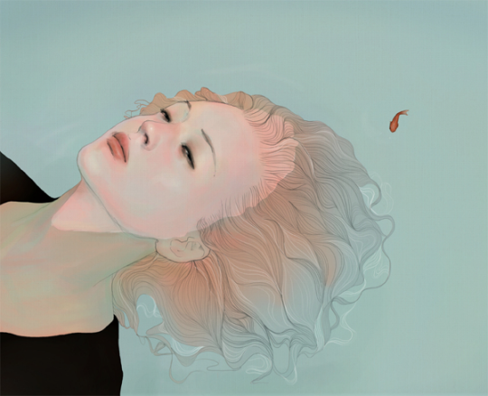

Preliminary
In Class Research
Brainstorming between technology and relationships
I am studying mental health disorders in youth because I want to find out
physical spaces can aid these disorders in order to help my reader understand
that they have other alternatives than going to therapy.
------------------------------------------------
Topics of Interest:
Bringing Awareness to Social Media Addiction
Mental Disorders:Social Anxiety, OCD, Depression
Bringing Awareness to Social Media Additcion
Social Media Addiction has always been a close problem of mine and many others that I know.
According to an infographic, compiled by Go-globe:
• Estimated number of active social media user is 2.03 Billion with global penetration of 28 percent.
• Social media usage accounts for 28 percent of all media time spent on the internet.
• Young generation (15 – 19 years old) spend at least 3 hours a day on social networking sites (including, Facebook, YouTube, Instagram, Twitter, GooglePlus etc.), while adults (20 – 29 years old) spend about 2 hours on their social media feeds.
1. Mental Disorders in Youth
1. Social anxiety disorder also called social phobia, is an anxiety disorder in which a person has an excessive and unreasonable fear of social situations. The anxiety can build into a panic attack. People with this have: Intense anxiety in social situations. Avoidance of social situations. Physical symptoms of anxiety, including confusion, pounding heart, sweating, shaking, blushing, muscle tension, upset stomach, and diarrhea.2. Depression
Sadness or downswings in mood are normal reactions to life’s struggles, setbacks, and disappointments. Many people use the word “depression” to explain these kinds of feelings, but depression is much more than just sadness.-Feelings of helplessness and hopelessness
-Loss of interest in daily activities
-Appetite or weight changes
-Sleep changes
-Anger or irritability

3. OCD
Obsessive-compulsive disorder is a mental illness. It’s made up of two parts: obsessions and compulsions. People may experience obsessions, compulsions, or both, and they cause a lot of distress.
Obsessions are unwanted and repetitive thoughts, urges, or images that don’t go away. They cause a lot of anxiety. For example, someone might worry about making people they love sick by bringing in germs. Obsessions can focus on anything. These obsessive thoughts can be uncomfortable. Obsessions aren’t thoughts that a person would normally focus on, and they are not about a person’s character. They are symptoms of an illness.
Fear of being contaminated by germs or dirt or contaminating others Fear of causing harm to yourself or others Intrusive sexually explicit or violent thoughts and images Excessive focus on religious or moral ideas Fear of losing or not having things you might need Order and symmetry: the idea that everything must line up “just right” Superstitions; excessive attention to something considered lucky or unlucky
--------------------------------------------------------------------------------
Researching Physical Spaces that address social issues
The Bitter Sip gives us moments to think about social discriminations while we’re having cup of coffees in our busy daily lives. By creating an environment that imitates real-life situations of minority being discriminated, it offers hands-on and tangible understanding of these global issues.Cafe Office Hybrid
This cafe Office Hybrid gives a sense of coziness and comfort while providing a nice workspace.Chocolate Cafe
Who Doesn’t like Chocolate?
Dog and Cat Cafes
Dog and cats could be a way to cure depression or any related mental disorders.Special Cafes
Helping depression through Art TherapyArt therapy, such as drawing, painting, and sculpting Dance or movement therapy
Music therapy, which can be used passively to relieve anxiety and depression through listening or as an active and creative therapy by playing and writing music.
---------------------------------------------------------------------------------
Preliminary Visual Essay
OCD:
This is a video I made about OCD and how everyday things in York University that seem like nothing to some people could be a big deal to people with OCD. This is demonstrating the most “known” type of OCD – Order and Symmetry.
Sequence 02 from Mina Moon on Vimeo.
SOFTWAREUsed: Adobe Premiere
Social Anxiety:
A simple illustration made by me to express what people with social anxiety feel on the inside. I compared what they look like on the inside and what they’re actually thinking. Software Used: Adobe Illustrator
Depression:
Storyboards I made for a possible video I want to make about depression. In the first half, it’s about asking very general and impersonal questions to random people seeing if they know a lot about depression and its effects. Later on the video, I wanted to interview a very few handful of people who had depression and asked them more in depth questions.